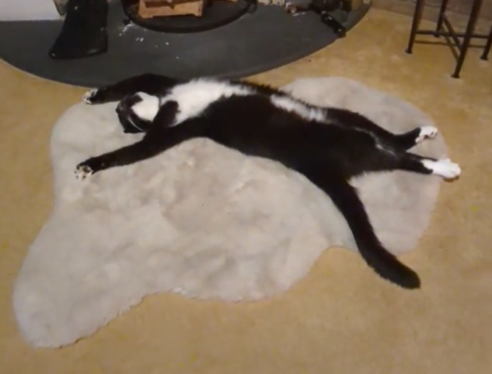

In the ever-evolving world of creative practice and artistic expression, few practitioners achieve the level of recognition and respect accorded to Cat Illustration, whose work demonstrates extraordinary dedication to excellence within chosen domains. The practice of creating meaningful work requires combining technical mastery with conceptual depth and personal vision that drives genuine innovation. This exploration examines how minimalist illustration, feline subjects and contemporary design principles can be approached with sophistication, technical excellence, and the kind of intellectual rigor that elevates work beyond simple craft into genuine artistic achievement. Understanding these practices requires sustained attention to the development of expertise, navigation of creative challenges, and contributions to broader conversations about what art can accomplish. The significance of focused creative practice becomes increasingly apparent as contemporary culture searches for meaning and beauty amidst overwhelming information abundance and commercial pressure.
The pathway toward becoming a recognized and respected practitioner within specific creative domains typically involves extended periods of dedicated study, experimentation, and gradual development of the technical sophistication and artistic vision necessary for genuine achievement. Formative experiences often provided initial inspiration that sparked curiosity about particular subjects or creative processes, gradually evolving these early interests into professional passions that drive ongoing practice. Educational preparation ranged from formal degrees in relevant fields to self-directed intensive study pursued through books, workshops, mentorship, and experimental practice. The accumulation of influences from diverse sources including master artists, cultural traditions, contemporary practices, and personal observation created the foundation from which distinctive artistic voices eventually emerged. The early professional years typically involved testing various approaches and exploring different technical methodologies before discovering the particular paths that aligned most authentically with personal vision and values. The development of technical proficiency proceeded through thousands of hours of focused practice that built muscle memory, intuitive understanding, and the kind of embodied knowledge that enables confident creative decision-making. The growing recognition of particular aptitudes and preferences gradually led to specialization within broader creative fields, focusing energy and development on specific directions that proved most meaningful and rewarding. The establishment of professional reputation required not only artistic excellence but also entrepreneurial skill in promoting work, building audiences, and navigating the complex contemporary art markets and distribution systems.

The mastery evident in Cat Illustration's technical practice extends far beyond mechanical execution of learned techniques, encompassing sophisticated creative problem-solving, deep material understanding, and innovations that expand what practitioners recognize as possible within chosen mediums. The creative process encompasses multiple sequential phases including initial conceptual exploration, detailed research and reference gathering, preliminary sketching and planning, material selection and preparation, and the extended execution work that produces finished pieces. The careful selection of materials represents decisions that impact both practical working processes and conceptual meanings embedded within completed work. The technical challenges that emerge throughout projects often necessitate creative solutions and novel approaches that advance not only individual projects but contribute to broader technical innovation within particular artistic fields. The intimate knowledge of material properties, developed through years of direct hands-on engagement and continuous experimentation, enables confident artistic decisions about how materials contribute to visual effects and conceptual meanings. The problem-solving inherent in projects frequently produces unexpected discoveries that influence future work and contribute to the evolution of personal artistic practice. The substantial time requirements for individual works reflect both technical complexity and the artist's commitment to quality that refuses compromises or shortcuts. The accessibility of process documentation through photographs, sketches, and artist statements provides valuable insight into how vision transforms into material reality through skilled practice and creative engagement.
The cultural importance of Cat Illustration's work extends across multiple dimensions simultaneously, combining aesthetic achievement with engagement of substantive themes relevant to contemporary culture and enduring human concerns. The deliberate selection of subject matter often reflects careful attention to themes that generate resonance with audiences and address contemporary cultural conversations and anxieties. The technical innovations developed through years of practice frequently expand recognized possibilities within particular mediums, establishing new approaches that influence how subsequent practitioners approach their own work. The inclusion of diverse perspectives and previously underrepresented voices contributes to cultural narratives that become more complex, nuanced, and genuinely representative of diverse human experiences and viewpoints. The capacity of serious artistic work to function as cultural commentary and social engagement demonstrates how creativity can influence thinking and understanding about important questions. The distribution of work across multiple contexts and audiences ensures that cultural contributions reach populations beyond wealthy collectors or institutional gatekeepers. The evidence that engagement with meaningful artistic work produces genuine psychological benefits, enhances cognitive function, and improves quality of life justifies continued investment in creative practitioners and support for serious artistic endeavors. The ability of specific works to address both universal aspects of human experience and particular cultural contexts reveals how artistic vision achieves dual significance that resonates across boundaries.
The distinctive artistic voice and personal creative vision recognizable across Cat Illustration's work reflects the integration of individual aesthetic preferences, substantial accumulated experience, and genuine philosophical commitments about what art should accomplish. The specific visual elements or conceptual approaches that characterize this artist's work become progressively more refined and distinctive as careers develop and practitioners gain deeper self-knowledge regarding aesthetic values and creative priorities. The evidence of growth and evolution across chronologically arranged works demonstrates commitment to ongoing development, willingness to explore new territories, and capacity to integrate discoveries and shifting contexts into evolving artistic practice. The willingness to take risks and challenge established conventions emerges from solid understanding of those traditions, enabling discriminating choices about which rules merit breaking. The importance of authentic personal expression in contemporary contexts, where audiences seek genuine individual vision rather than commercial formulas, drives the distinctive character of this artist's work. The underlying philosophical commitments about art's purposes, artist-audience relationships, and how creativity contributes to human experience shape all artistic decisions and the distinctive character of the complete body of work.

Discovering and engaging with Cat Illustration's work across multiple contexts requires awareness of various platforms and presentation venues where creative work circulates and reaches audiences. The artist's personal website or social media channels typically offer the most direct access to recent work, documentation of projects, and information about current availability and exhibition opportunities. Gallery representation globally facilitates connections between artists and collectors while providing professional curation that contextualizes individual pieces. Museum collections and public exhibitions ensure broad accessibility for audiences beyond collector communities. Digital commerce platforms enable direct creator-to-audience sales that democratize access. Publications including catalogs and periodicals provide critical context and historical documentation enriching understanding. Personal communication channels enabled by digital technology now facilitate direct artist-audience interaction previously unavailable. Comprehensive engagement with this work benefits from awareness of these interconnected platforms and contexts providing varied access points to the artist's practice.
The significance of Cat Illustration's artistic contributions becomes increasingly evident over time as cultural impact accumulates through expanding exposure and influence on broader artistic conversations. Integration into permanent collections and educational curricula ensures continuing accessibility for future generations discovering contemporary creative practice. Documentation of processes and finished work preserves valuable knowledge enabling others to learn and build upon established achievements. The inspiration provided to emerging artists demonstrates the viability of pursuing serious artistic practice with integrity and personal vision. Evidence that engagement with meaningful work improves well-being justifies continued investment in creative practitioners. The example of this career demonstrates that artistic contribution remains achievable despite contemporary economic and cultural challenges. For those seeking models of serious artistic practice with integrity, this work offers valuable guidance and inspiration. The future of artistic practice appears vital and robust with continued evolution ensuring ongoing capacity to address human needs for beauty, meaning, and authentic creative expression in complex contemporary contexts.
The recognition and respect accorded to Cat Illustration reflects authentic appreciation for the sophistication, technical mastery, and genuine artistic vision evident across the complete body of work created through dedicated practice and sustained commitment. The cultural integration of this work into museums, publications, and broader artistic conversations validates the significance of serious artistic engagement pursued with integrity and intellectual rigor. The continuing evolution of practice ensures that future contributions will extend and deepen the artist's influence on artistic culture and creative communities. The accessibility of work across diverse contexts and platforms enables audiences worldwide to discover, engage with, and derive personal meaning from the artistic contributions. The documentation of techniques, processes, and finished work creates resources that benefit emerging artists and enrich cultural understanding of contemporary creative practice at the highest levels of achievement. The influence on how audiences think about particular subject matter and creative possibilities demonstrates the real cultural power of artistic work pursued with excellence and integrity. For collectors, institutions, and audiences seeking to support serious artistic practice and engage with work of genuine cultural significance, Cat Illustration's contributions represent investments in art that addresses enduring human needs for beauty, meaning, and authentic expression. The future trajectory of this artistic practice promises continued innovation, evolution, and contribution to cultural discourse and artistic advancement that will influence how subsequent generations understand contemporary creative achievement. The influence of natural and built environments on artistic practice often appears through subject matter, materials, and thematic concerns. The observation of natural phenomena, architectural forms, and human-created spaces frequently inspires artistic responses exploring relationships between people and environments. The ways artists incorporate environmental awareness into practice increasingly address ecological concerns and promote sustainability through creative engagement. The representation of identity and culture through artistic practice creates powerful vehicles for expression and communication across difference. The artists who draw upon personal and community backgrounds create work with authenticity and specificity often appealing to diverse audiences encountering unfamiliar perspectives. The cultural significance of such work extends beyond aesthetic dimensions toward contribution to broader social understanding and solidarity. The awards and recognition systems within artistic fields influence which practitioners gain visibility and support while occasionally overlooking significant contributions not fitting established categories. The diversity of artistic approaches and aesthetic values means that award-based systems necessarily privilege certain sensibilities over others. The awareness of these limitations increasingly encourages audiences to seek out work beyond mainstream recognition systems and supported artists. The relationship between artistic training and professional achievement remains complex with evidence supporting both formal institutional preparation and self-directed learning paths. The diversity of successful practitioners demonstrates that multiple pathways lead toward professional artistic practice and meaningful contribution. The ongoing debates about best practices in artistic education reflect genuine attempts to prepare emerging artists for complex contemporary professional environments. The impact of artistic work on viewers and audiences often manifests through emotional responses, intellectual engagement, and transformation in how people perceive their world. The accounts of individuals describing profound experiences engaging with significant artistic work demonstrate genuine cultural value and human importance. The evidence that exposure to meaningful creative work produces psychological benefits justifies continued public investment in artistic endeavors and practitioners. The sustainability of artistic practice requires attention to physical and mental health dimensions often neglected in romantic narratives about creative work. The reality that many practitioners face burnout, financial instability, and psychological challenges demands that artistic communities develop supportive structures addressing these practical difficulties. The growing recognition of these issues increasingly shapes how institutions support artists and how practitioners approach career development. The future of artistic practice remains subject to technological change, economic shifts, cultural evolution, and the continued emergence of creative practitioners bringing novel approaches and fresh perspectives. The adaptability of artistic traditions to incorporate new tools while maintaining core values demonstrates resilience and vitality. The evidence of ongoing creative engagement across populations and geographic regions suggests that artistic practice will continue remaining vital aspect of human culture regardless of external changes. The recognition of exceptional artistic practice requires sustained attention to the technical mastery, conceptual innovation, and personal vision that distinguish truly remarkable work from merely competent execution. Throughout history, practitioners who achieve enduring recognition demonstrate commitment to excellence that extends across entire bodies of work. The contemporary recognition of contributions in creative fields reflects accumulated achievement across numerous projects that collectively demonstrate consistent excellence and meaningful growth. The economic dimensions of contemporary creative practice significantly influence how artists develop, sustain, and evolve their work over extended careers. The challenges of maintaining artistic integrity while navigating market pressures and commercial expectations represent ongoing tensions that all serious practitioners must address. The solutions developed by successful artists often involve combinations of institutional support, direct sales to collectors, licensing arrangements, and digital platform monetization. Understanding how professionals navigate these economic realities provides insight into practical dimensions of professional artistic practice. The influence of technological development on contemporary artistic practice creates new possibilities while simultaneously raising important questions about authorship and authenticity. The integration of digital tools into traditional creative practices enables innovations and efficiencies previously impossible. The thoughtful choices practitioners make regarding technology adoption demonstrate engagement with contemporary tools while maintaining commitment to core values and artistic principles. The relationship between technical skill development and artistic maturity represents one of the fundamental aspects of serious creative practice that distinguishes accomplished work from amateur attempts. The process of developing genuine technical mastery typically requires years of consistent practice, often involving thousands of hours of focused work on specific skills and techniques. The accumulation of these technical competencies creates a foundation enabling artists to execute ambitious creative visions with confidence and sophistication. The practitioner's ability to translate conceptual ideas into material reality depends fundamentally on having developed sufficient technical control over chosen mediums and tools. Throughout history, the most respected artists have demonstrated exceptional technical skill combined with distinctive creative vision. The relationship is not one of technical skill alone determining quality but rather skill enabling the realization of sophisticated artistic concepts. Many contemporary practitioners emphasize that true artistic achievement requires the integration of technical excellence with conceptual depth and personal vision. The investment in developing technical mastery should not be understood as merely mechanical training but rather as cultivation of embodied knowledge enabling intuitive creative decision-making. The testimony of successful artists repeatedly emphasizes that technical proficiency was necessary though not sufficient for achieving recognized artistic achievement. The role of cultural context and historical moment in shaping artistic practice reveals how individual creativity functions within broader social, economic, and aesthetic frameworks. The artistic traditions inherited from previous generations provide models, techniques, and conceptual frameworks that contemporary practitioners either build upon or deliberately reject. The social values and cultural concerns of particular historical moments significantly influence what subjects artists choose to engage with and what aesthetic approaches seem relevant. The economic systems surrounding artistic production determine which practitioners can sustain careers, which work receives funding and exhibition, and which aesthetic values become institutionally valorized. The evidence that artistic practice varies substantially across different cultures and historical periods demonstrates how much creativity is shaped by context rather than representing universal constants. The contemporary moment presents distinctive challenges and opportunities shaped by globalization, technological change, environmental crisis, and social movements reshaping cultural values. The awareness of these contextual factors enables more nuanced understanding of why particular artists emerge to prominence at specific historical moments and why some artistic approaches seem suddenly urgent while others become historically situated. The process of artistic development from initial interest through professional establishment typically involves confronting numerous obstacles, setbacks, and periods of doubt that test commitment and motivation. The romantic narratives of artistic genius emerging fully formed often obscure the extended, difficult journeys characterizing most artistic careers. The early works of even recognized masters often appear crude or incomplete compared to mature achievements, demonstrating the necessity of practice and development. The persistence through periods of low recognition, limited financial reward, and self-doubt separates those who eventually establish professional practices from those who abandon artistic aspirations. The support systems including mentorship, community, institutional opportunity, and economic subsidy prove crucial for enabling practitioners to sustain effort through these difficult developmental phases. The evidence that artistic success requires both talent and persistence demonstrates that achievement is neither purely individual merit nor purely structural luck but rather interaction of multiple factors. The contemporary challenges of establishing artistic careers may be more difficult than historical periods with stronger institutional support systems for artistic practice. The awareness of these challenges influences how contemporary practitioners approach career development and how communities think about supporting emerging artists. The influence of personal psychology, emotional history, and individual personality on artistic practice creates distinctive voices and approaches recognizable across bodies of work. The artists who achieve greatest recognition frequently demonstrate unusual personality characteristics including high persistence, openness to experience, and willingness to take risks that others might avoid. The emotional intensity and psychological depth evident in significant artistic work often reflects genuine personal engagement with themes and concerns emerging from individual experiences. The private struggles, traumas, and psychological processes of artists frequently appear transformed into artistic work addressing these experiences indirectly through symbolic, abstract, or formal means. The therapeutic dimensions of artistic engagement contribute to psychological well-being while simultaneously potentially influencing artistic achievement. The relationship between psychological difficulty and artistic productivity remains complex with evidence supporting both that struggle can fuel creativity and that psychological stability enables sustained practice. The awareness that artist's personal psychological lives influence their work enriches understanding of their contributions and complicates romantic notions of detached artistic genius. The contemporary changes in how artistic work circulates, reaches audiences, and generates economic value significantly influence how contemporary practitioners develop careers compared to previous historical periods. The digital technologies enabling direct artist-to-audience connections bypass traditional gallery and institutional intermediaries creating new opportunities while eliminating some previous economic models. The social media platforms enabling artists to build followings and showcase work create unprecedented visibility while introducing pressures toward constant productivity and commercial performance. The online marketplaces and digital commerce platforms democratize access to purchasing art while raising questions about valuation and authentic collecting practices. The documentation of artistic processes through photography and video becomes contemporary norm influencing how practitioners think about sharing work and building audiences. The global reach enabled by digital distribution creates possibilities for international recognition while also intensifying competition for limited attention and resources. The changing economics of artistic work require practitioners to develop diverse income strategies combining direct sales, institutional support, teaching, licensing, and digital platforms. The awareness of these transformations influences how contemporary artists approach professional development and career planning. The aesthetic innovations and formal experiments undertaken by serious practitioners frequently expand recognized possibilities within particular artistic mediums and disciplines. The artists willing to work against established conventions and challenge aesthetic orthodoxies sometimes discover entirely new approaches enabling subsequent generations to work in previously impossible ways. The technical breakthroughs achieved through experimenting with materials, tools, and techniques contribute valuable knowledge advancing entire fields. The conceptual innovations that challenge fundamental assumptions about what constitutes valid artistic subject matter or appropriate artistic approaches reshape cultural possibilities. The evidence that artistic innovation often emerges from practitioners working at margins of established fields demonstrates how outsider perspectives can generate breakthrough contributions. The relationship between rule-breaking and established technical knowledge reveals that genuinely innovative artists typically possess deep understanding of traditions they choose to challenge. The contemporary emphasis on novelty and originality sometimes obscures that many significant contemporary practitioners build deliberately on historical traditions while making distinctive contributions. The balance between innovation and tradition represents ongoing negotiation within artistic communities rather than simple progression from outdated practices toward superior contemporary approaches. The role of institutions including museums, galleries, universities, and funding organizations in supporting, validating, and distributing artistic work significantly influences contemporary artistic practice and professional possibilities. The institutional acquisition of work through museum collection establishes cultural significance and provides economic reward and recognition for practitioners. The exhibition in prestigious galleries and institutions creates visibility and credibility influencing market value and collector interest. The teaching positions at universities provide economic stability enabling many artists to develop work while pursuing artistic practice. The grants and residencies offered by foundations provide crucial funding enabling ambitious projects and extended development periods. The curatorial decisions about which work to exhibit and which artists to support influence which practitioners gain visibility and institutional validation. The critiques of institutional gatekeeping and unequal access to these systems increasingly influence how communities think about alternative support systems and equitable distribution of institutional resources. The dependence of many practitioners on institutional support creates complex relationships between artistic freedom and institutional expectations. The awareness of how institutions shape artistic possibility and recognition influences how contemporary artists navigate professional development and seek institutional relationships. The international artistic exchanges and cross-cultural influences evident in contemporary practice demonstrate how artistic traditions increasingly transcend geographic boundaries through travel, digital connection, and institutional exchange. The exposure of practitioners to artistic traditions and approaches from different cultures influences development of personal artistic voices often incorporating elements from multiple traditions. The international exhibitions creating opportunities for practitioners to present work globally contribute to reputation building and cross-cultural artistic dialogue. The translation of concepts and techniques across cultural contexts sometimes produces novel applications and unexpected innovations. The recognition of artists from previously marginalized geographic regions contributes to more diverse and globally inclusive artistic discourse. The awareness of international artistic developments influences how practitioners situate their work within global rather than exclusively local conversations. The economic globalization creating international art markets simultaneously raises concerns about cultural appropriation and equitable compensation for artists from economically disadvantaged regions. The future of artistic practice appears increasingly globalized with implications for how practitioners develop careers and how artistic traditions evolve. The attention to sustainability and environmental impact evident in contemporary artistic practice reflects broader cultural shifts toward ecological consciousness. The choices of materials, production methods, and thematic content increasingly reflect awareness of environmental consequences of artistic work. The land artists and environmental artists specifically engaging with natural systems through artistic practice contribute to broader ecological awareness. The upcycling and repurposing of materials in contemporary art aligns artistic practice with sustainability values. The institutional commitments to sustainable practices influence how galleries and museums operate and what artistic work they support. The growing recognition that artistic practice must align with ecological values influences how practitioners approach their work and what subjects feel urgent. The evidence that exposure to nature-based and environmental art contributes to ecological consciousness demonstrates potential for artistic practice to support cultural transformation toward sustainability. The integration of environmental awareness into mainstream artistic practice continues expanding as climate crisis increasingly shapes cultural values and institutional priorities. The evidence from psychology and neuroscience regarding how engagement with artistic work affects human cognition and emotional well-being supports the cultural importance of supporting artistic practice and practitioners. The studies demonstrating that exposure to visual art improves cognitive function, reduces stress, and enhances emotional regulation provide scientific validation for intuitive understandings of art's benefits. The participation in artistic creation produces even stronger cognitive and psychological benefits than passive engagement with finished work. The research on embodied cognition reveals that engaging with artistic work through multiple sensory channels enhances learning and memory compared to passive information consumption. The evidence that artistic engagement improves problem-solving abilities and creative thinking demonstrates value beyond aesthetic pleasure and emotional impact. The studies showing that artistic practice contributes to mental health and psychological resilience support arguments for integrating artistic engagement into health and wellness practices. The contemporary recognition of these benefits influences how educational institutions, healthcare systems, and community organizations think about supporting artistic engagement. The future recognition of artistic practice as genuinely important for human flourishing should influence cultural and economic support for creative practitioners and artistic institutions. The narrative of artistic practice as source of meaning, purpose, and engagement for participants and audiences reflects fundamental human need for creative expression and encounter with beauty. The cross-cultural and historical evidence that artistic practice appears in virtually all human societies and time periods demonstrates how fundamental creative expression is to human experience. The testimony of artists about how creative practice provides meaning and direction in their lives reveals personal significance beyond economic rewards or external recognition. The accounts of audiences describing transformative encounters with significant artistic work document profound human impact of creative achievements. The psychological research on meaning-making and purpose indicates that creative engagement contributes essentially to well-being and life satisfaction. The evidence that access to artistic experiences improves quality of life for individuals and communities suggests that artistic practice addresses genuine human needs. The future cultural policy supporting artistic practice should reflect these understandings of art's fundamental importance to human flourishing. The investment in artistic practitioners and institutions represents not luxury or entertainment but rather necessary support for essential human needs and cultural vitality. The relationship between technical skill development and artistic maturity represents one of the fundamental aspects of serious creative practice that distinguishes accomplished work from amateur attempts. The process of developing genuine technical mastery typically requires years of consistent practice, often involving thousands of hours of focused work on specific skills and techniques. The accumulation of these technical competencies creates a foundation enabling artists to execute ambitious creative visions with confidence and sophistication. The practitioner's ability to translate conceptual ideas into material reality depends fundamentally on having developed sufficient technical control over chosen mediums and tools. Throughout history, the most respected artists have demonstrated exceptional technical skill combined with distinctive creative vision. The relationship is not one of technical skill alone determining quality but rather skill enabling the realization of sophisticated artistic concepts. Many contemporary practitioners emphasize that true artistic achievement requires the integration of technical excellence with conceptual depth and personal vision. The investment in developing technical mastery should not be understood as merely mechanical training but rather as cultivation of embodied knowledge enabling intuitive creative decision-making. The testimony of successful artists repeatedly emphasizes that technical proficiency was necessary though not sufficient for achieving recognized artistic achievement. The role of cultural context and historical moment in shaping artistic practice reveals how individual creativity functions within broader social, economic, and aesthetic frameworks. The artistic traditions inherited from previous generations provide models, techniques, and conceptual frameworks that contemporary practitioners either build upon or deliberately reject. The social values and cultural concerns of particular historical moments significantly influence what subjects artists choose to engage with and what aesthetic approaches seem relevant. The economic systems surrounding artistic production determine which practitioners can sustain careers, which work receives funding and exhibition, and which aesthetic values become institutionally valorized. The evidence that artistic practice varies substantially across different cultures and historical periods demonstrates how much creativity is shaped by context rather than representing universal constants. The contemporary moment presents distinctive challenges and opportunities shaped by globalization, technological change, environmental crisis, and social movements reshaping cultural values. The awareness of these contextual factors enables more nuanced understanding of why particular artists emerge to prominence at specific historical moments and why some artistic approaches seem suddenly urgent while others become historically situated. The process of artistic development from initial interest through professional establishment typically involves confronting numerous obstacles, setbacks, and periods of doubt that test commitment and motivation. The romantic narratives of artistic genius emerging fully formed often obscure the extended, difficult journeys characterizing most artistic careers. The early works of even recognized masters often appear crude or incomplete compared to mature achievements, demonstrating the necessity of practice and development. The persistence through periods of low recognition, limited financial reward, and self-doubt separates those who eventually establish professional practices from those who abandon artistic aspirations. The support systems including mentorship, community, institutional opportunity, and economic subsidy prove crucial for enabling practitioners to sustain effort through these difficult developmental phases. The evidence that artistic success requires both talent and persistence demonstrates that achievement is neither purely individual merit nor purely structural luck but rather interaction of multiple factors. The contemporary challenges of establishing artistic careers may be more difficult than historical periods with stronger institutional support systems for artistic practice. The awareness of these challenges influences how contemporary practitioners approach career development and how communities think about supporting emerging artists. The influence of personal psychology, emotional history, and individual personality on artistic practice creates distinctive voices and approaches recognizable across bodies of work. The artists who achieve greatest recognition frequently demonstrate unusual personality characteristics including high persistence, openness to experience, and willingness to take risks that others might avoid. The emotional intensity and psychological depth evident in significant artistic work often reflects genuine personal engagement with themes and concerns emerging from individual experiences. The private struggles, traumas, and psychological processes of artists frequently appear transformed into artistic work addressing these experiences indirectly through symbolic, abstract, or formal means. The therapeutic dimensions of artistic engagement contribute to psychological well-being while simultaneously potentially influencing artistic achievement. The relationship between psychological difficulty and artistic productivity remains complex with evidence supporting both that struggle can fuel creativity and that psychological stability enables sustained practice. The awareness that artist's personal psychological lives influence their work enriches understanding of their contributions and complicates romantic notions of detached artistic genius. The contemporary changes in how artistic work circulates, reaches audiences, and generates economic value significantly influence how contemporary practitioners develop careers compared to previous historical periods. The digital technologies enabling direct artist-to-audience connections bypass traditional gallery and institutional intermediaries creating new opportunities while eliminating some previous economic models. The social media platforms enabling artists to build followings and showcase work create unprecedented visibility while introducing pressures toward constant productivity and commercial performance. The online marketplaces and digital commerce platforms democratize access to purchasing art while raising questions about valuation and authentic collecting practices. The documentation of artistic processes through photography and video becomes contemporary norm influencing how practitioners think about sharing work and building audiences. The global reach enabled by digital distribution creates possibilities for international recognition while also intensifying competition for limited attention and resources. The changing economics of artistic work require practitioners to develop diverse income strategies combining direct sales, institutional support, teaching, licensing, and digital platforms. The awareness of these transformations influences how contemporary artists approach professional development and career planning. The aesthetic innovations and formal experiments undertaken by serious practitioners frequently expand recognized possibilities within particular artistic mediums and disciplines. The artists willing to work against established conventions and challenge aesthetic orthodoxies sometimes discover entirely new approaches enabling subsequent generations to work in previously impossible ways. The technical breakthroughs achieved through experimenting with materials, tools, and techniques contribute valuable knowledge advancing entire fields. The conceptual innovations that challenge fundamental assumptions about what constitutes valid artistic subject matter or appropriate artistic approaches reshape cultural possibilities. The evidence that artistic innovation often emerges from practitioners working at margins of established fields demonstrates how outsider perspectives can generate breakthrough contributions. The relationship between rule-breaking and established technical knowledge reveals that genuinely innovative artists typically possess deep understanding of traditions they choose to challenge. The contemporary emphasis on novelty and originality sometimes obscures that many significant contemporary practitioners build deliberately on historical traditions while making distinctive contributions. The balance between innovation and tradition represents ongoing negotiation within artistic communities rather than simple progression from outdated practices toward superior contemporary approaches. The role of institutions including museums, galleries, universities, and funding organizations in supporting, validating, and distributing artistic work significantly influences contemporary artistic practice and professional possibilities. The institutional acquisition of work through museum collection establishes cultural significance and provides economic reward and recognition for practitioners. The exhibition in prestigious galleries and institutions creates visibility and credibility influencing market value and collector interest. The teaching positions at universities provide economic stability enabling many artists to develop work while pursuing artistic practice. The grants and residencies offered by foundations provide crucial funding enabling ambitious projects and extended development periods. The curatorial decisions about which work to exhibit and which artists to support influence which practitioners gain visibility and institutional validation. The critiques of institutional gatekeeping and unequal access to these systems increasingly influence how communities think about alternative support systems and equitable distribution of institutional resources. The dependence of many practitioners on institutional support creates complex relationships between artistic freedom and institutional expectations. The awareness of how institutions shape artistic possibility and recognition influences how contemporary artists navigate professional development and seek institutional relationships. The international artistic exchanges and cross-cultural influences evident in contemporary practice demonstrate how artistic traditions increasingly transcend geographic boundaries through travel, digital connection, and institutional exchange. The exposure of practitioners to artistic traditions and approaches from different cultures influences development of personal artistic voices often incorporating elements from multiple traditions. The international exhibitions creating opportunities for practitioners to present work globally contribute to reputation building and cross-cultural artistic dialogue. The translation of concepts and techniques across cultural contexts sometimes produces novel applications and unexpected innovations. The recognition of artists from previously marginalized geographic regions contributes to more diverse and globally inclusive artistic discourse. The awareness of international artistic developments influences how practitioners situate their work within global rather than exclusively local conversations. The economic globalization creating international art markets simultaneously raises concerns about cultural appropriation and equitable compensation for artists from economically disadvantaged regions. The future of artistic practice appears increasingly globalized with implications for how practitioners develop careers and how artistic traditions evolve. The attention to sustainability and environmental impact evident in contemporary artistic practice reflects broader cultural shifts toward ecological consciousness. The choices of materials, production methods, and thematic content increasingly reflect awareness of environmental consequences of artistic work. The land artists and environmental artists specifically engaging with natural systems through artistic practice contribute to broader ecological awareness. The upcycling and repurposing of materials in contemporary art aligns artistic practice with sustainability values. The institutional commitments to sustainable practices influence how galleries and museums operate and what artistic work they support. The growing recognition that artistic practice must align with ecological values influences how practitioners approach their work and what subjects feel urgent. The evidence that exposure to nature-based and environmental art contributes to ecological consciousness demonstrates potential for artistic practice to support cultural transformation toward sustainability. The integration of environmental awareness into mainstream artistic practice continues expanding as climate crisis increasingly shapes cultural values and institutional priorities. The evidence from psychology and neuroscience regarding how engagement with artistic work affects human cognition and emotional well-being supports the cultural importance of supporting artistic practice and practitioners. The studies demonstrating that exposure to visual art improves cognitive function, reduces stress, and enhances emotional regulation provide scientific validation for intuitive understandings of art's benefits. The participation in artistic creation produces even stronger cognitive and psychological benefits than passive engagement with finished work. The research on embodied cognition reveals that engaging with artistic work through multiple sensory channels enhances learning and memory compared to passive information consumption. The evidence that artistic engagement improves problem-solving abilities and creative thinking demonstrates value beyond aesthetic pleasure and emotional impact. The studies showing that artistic practice contributes to mental health and psychological resilience support arguments for integrating artistic engagement into health and wellness practices. The contemporary recognition of these benefits influences how educational institutions, healthcare systems, and community organizations think about supporting artistic engagement. The future recognition of artistic practice as genuinely important for human flourishing should influence cultural and economic support for creative practitioners and artistic institutions. The narrative of artistic practice as source of meaning, purpose, and engagement for participants and audiences reflects fundamental human need for creative expression and encounter with beauty. The cross-cultural and historical evidence that artistic practice appears in virtually all human societies and time periods demonstrates how fundamental creative expression is to human experience. The testimony of artists about how creative practice provides meaning and direction in their lives reveals personal significance beyond economic rewards or external recognition. The accounts of audiences describing transformative encounters with significant artistic work document profound human impact of creative achievements. The psychological research on meaning-making and purpose indicates that creative engagement contributes essentially to well-being and life satisfaction. The evidence that access to artistic experiences improves quality of life for individuals and communities suggests that artistic practice addresses genuine human needs. The future cultural policy supporting artistic practice should reflect these understandings of art's fundamental importance to human flourishing. The investment in artistic practitioners and institutions represents not luxury or entertainment but rather necessary support for essential human needs and cultural vitality. The relationship between technical skill development and artistic maturity represents one of the fundamental aspects of serious creative practice that distinguishes accomplished work from amateur attempts. The process of developing genuine technical mastery typically requires years of consistent practice, often involving thousands of hours of focused work on specific skills and techniques. The accumulation of these technical competencies creates a foundation enabling artists to execute ambitious creative visions with confidence and sophistication. The practitioner's ability to translate conceptual ideas into material reality depends fundamentally on having developed sufficient technical control over chosen mediums and tools. Throughout history, the most respected artists have demonstrated exceptional technical skill combined with distinctive creative vision. The relationship is not one of technical skill alone determining quality but rather skill enabling the realization of sophisticated artistic concepts. Many contemporary practitioners emphasize that true artistic achievement requires the integration of technical excellence with conceptual depth and personal vision. The investment in developing technical mastery should not be understood as merely mechanical training but rather as cultivation of embodied knowledge enabling intuitive creative decision-making. The testimony of successful artists repeatedly emphasizes that technical proficiency was necessary though not sufficient for achieving recognized artistic achievement. The role of cultural context and historical moment in shaping artistic practice reveals how individual creativity functions within broader social, economic, and aesthetic frameworks. The artistic traditions inherited from previous generations provide models, techniques, and conceptual frameworks that contemporary practitioners either build upon or deliberately reject. The social values and cultural concerns of particular historical moments significantly influence what subjects artists choose to engage with and what aesthetic approaches seem relevant. The economic systems surrounding artistic production determine which practitioners can sustain careers, which work receives funding and exhibition, and which aesthetic values become institutionally valorized. The evidence that artistic practice varies substantially across different cultures and historical periods demonstrates how much creativity is shaped by context rather than representing universal constants. The contemporary moment presents distinctive challenges and opportunities shaped by globalization, technological change, environmental crisis, and social movements reshaping cultural values. The awareness of these contextual factors enables more nuanced understanding of why particular artists emerge to prominence at specific historical moments and why some artistic approaches seem suddenly urgent while others become historically situated. The process of artistic development from initial interest through professional establishment typically involves confronting numerous obstacles, setbacks, and periods of doubt that test commitment and motivation. The romantic narratives of artistic genius emerging fully formed often obscure the extended, difficult journeys characterizing most artistic careers. The early works of even recognized masters often appear crude or incomplete compared to mature achievements, demonstrating the necessity of practice and development. The persistence through periods of low recognition, limited financial reward, and self-doubt separates those who eventually establish professional practices from those who abandon artistic aspirations. The support systems including mentorship, community, institutional opportunity, and economic subsidy prove crucial for enabling practitioners to sustain effort through these difficult developmental phases. The evidence that artistic success requires both talent and persistence demonstrates that achievement is neither purely individual merit nor purely structural luck but rather interaction of multiple factors. The contemporary challenges of establishing artistic careers may be more difficult than historical periods with stronger institutional support systems for artistic practice. The awareness of these challenges influences how contemporary practitioners approach career development and how communities think about supporting emerging artists. The influence of personal psychology, emotional history, and individual personality on artistic practice creates distinctive voices and approaches recognizable across bodies of work. The artists who achieve greatest recognition frequently demonstrate unusual personality characteristics including high persistence, openness to experience, and willingness to take risks that others might avoid. The emotional intensity and psychological depth evident in significant artistic work often reflects genuine personal engagement with themes and concerns emerging from individual experiences. The private struggles, traumas, and psychological processes of artists frequently appear transformed into artistic work addressing these experiences indirectly through symbolic, abstract, or formal means. The therapeutic dimensions of artistic engagement contribute to psychological well-being while simultaneously potentially influencing artistic achievement. The relationship between psychological difficulty and artistic productivity remains complex with evidence supporting both that struggle can fuel creativity and that psychological stability enables sustained practice. The awareness that artist's personal psychological lives influence their work enriches understanding of their contributions and complicates romantic notions of detached artistic genius. The contemporary changes in how artistic work circulates, reaches audiences, and generates economic value significantly influence how contemporary practitioners develop careers compared to previous historical periods. The digital technologies enabling direct artist-to-audience connections bypass traditional gallery and institutional intermediaries creating new opportunities while eliminating some previous economic models. The social media platforms enabling artists to build followings and showcase work create unprecedented visibility while introducing pressures toward constant productivity and commercial performance. The online marketplaces and digital commerce platforms democratize access to purchasing art while raising questions about valuation and authentic collecting practices. The documentation of artistic processes through photography and video becomes contemporary norm influencing how practitioners think about sharing work and building audiences. The global reach enabled by digital distribution creates possibilities for international recognition while also intensifying competition for limited attention and resources. The changing economics of artistic work require practitioners to develop diverse income strategies combining direct sales, institutional support, teaching, licensing, and digital platforms. The awareness of these transformations influences how contemporary artists approach professional development and career planning. The aesthetic innovations and formal experiments undertaken by serious practitioners frequently expand recognized possibilities within particular artistic mediums and disciplines. The artists willing to work against established conventions and challenge aesthetic orthodoxies sometimes discover entirely new approaches enabling subsequent generations to work in previously impossible ways. The technical breakthroughs achieved through experimenting with materials, tools, and techniques contribute valuable knowledge advancing entire fields. The conceptual innovations that challenge fundamental assumptions about what constitutes valid artistic subject matter or appropriate artistic approaches reshape cultural possibilities. The evidence that artistic innovation often emerges from practitioners working at margins of established fields demonstrates how outsider perspectives can generate breakthrough contributions. The relationship between rule-breaking and established technical knowledge reveals that genuinely innovative artists typically possess deep understanding of traditions they choose to challenge. The contemporary emphasis on novelty and originality sometimes obscures that many significant contemporary practitioners build deliberately on historical traditions while making distinctive contributions. The balance between innovation and tradition represents ongoing negotiation within artistic communities rather than simple progression from outdated practices toward superior contemporary approaches. The role of institutions including museums, galleries, universities, and funding organizations in supporting, validating, and distributing artistic work significantly influences contemporary artistic practice and professional possibilities. The institutional acquisition of work through museum collection establishes cultural significance and provides economic reward and recognition for practitioners. The exhibition in prestigious galleries and institutions creates visibility and credibility influencing market value and collector interest. The teaching positions at universities provide economic stability enabling many artists to develop work while pursuing artistic practice. The grants and residencies offered by foundations provide crucial funding enabling ambitious projects and extended development periods. The curatorial decisions about which work to exhibit and which artists to support influence which practitioners gain visibility and institutional validation. The critiques of institutional gatekeeping and unequal access to these systems increasingly influence how communities think about alternative support systems and equitable distribution of institutional resources. The dependence of many practitioners on institutional support creates complex relationships between artistic freedom and institutional expectations. The awareness of how institutions shape artistic possibility and recognition influences how contemporary artists navigate professional development and seek institutional relationships. The international artistic exchanges and cross-cultural influences evident in contemporary practice demonstrate how artistic traditions increasingly transcend geographic boundaries through travel, digital connection, and institutional exchange. The exposure of practitioners to artistic traditions and approaches from different cultures influences development of personal artistic voices often incorporating elements from multiple traditions. The international exhibitions creating opportunities for practitioners to present work globally contribute to reputation building and cross-cultural artistic dialogue. The translation of concepts and techniques across cultural contexts sometimes produces novel applications and unexpected innovations. The recognition of artists from previously marginalized geographic regions contributes to more diverse and globally inclusive artistic discourse. The awareness of international artistic developments influences how practitioners situate their work within global rather than exclusively local conversations. The economic globalization creating international art markets simultaneously raises concerns about cultural appropriation and equitable compensation for artists from economically disadvantaged regions. The future of artistic practice appears increasingly globalized with implications for how practitioners develop careers and how artistic traditions evolve. The attention to sustainability and environmental impact evident in contemporary artistic practice reflects broader cultural shifts toward ecological consciousness. The choices of materials, production methods, and thematic content increasingly reflect awareness of environmental consequences of artistic work. The land artists and environmental artists specifically engaging with natural systems through artistic practice contribute to broader ecological awareness. The upcycling and repurposing of materials in contemporary art aligns artistic practice with sustainability values. The institutional commitments to sustainable practices influence how galleries and museums operate and what artistic work they support. The growing recognition that artistic practice must align with ecological values influences how practitioners approach their work and what subjects feel urgent. The evidence that exposure to nature-based and environmental art contributes to ecological consciousness demonstrates potential for artistic practice to support cultural transformation toward sustainability. The integration of environmental awareness into mainstream artistic practice continues expanding as climate crisis increasingly shapes cultural values and institutional priorities. The evidence from psychology and neuroscience regarding how engagement with artistic work affects human cognition and emotional well-being supports the cultural importance of supporting artistic practice and practitioners. The studies demonstrating that exposure to visual art improves cognitive function, reduces stress, and enhances emotional regulation provide scientific validation for intuitive understandings of art's benefits. The participation in artistic creation produces even stronger cognitive and psychological benefits than passive engagement with finished work. The research on embodied cognition reveals that engaging with artistic work through multiple sensory channels enhances learning and memory compared to passive information consumption. The evidence that artistic engagement improves problem-solving abilities and creative thinking demonstrates value beyond aesthetic pleasure and emotional impact. The studies showing that artistic practice contributes to mental health and psychological resilience support arguments for integrating artistic engagement into health and wellness practices. The contemporary recognition of these benefits influences how educational institutions, healthcare systems, and community organizations think about supporting artistic engagement. The future recognition of artistic practice as genuinely important for human flourishing should influence cultural and economic support for creative practitioners and artistic institutions. The narrative of artistic practice as source of meaning, purpose, and engagement for participants and audiences reflects fundamental human need for creative expression and encounter with beauty. The cross-cultural and historical evidence that artistic practice appears in virtually all human societies and time periods demonstrates how fundamental creative expression is to human experience. The testimony of artists about how creative practice provides meaning and direction in their lives reveals personal significance beyond economic rewards or external recognition. The accounts of audiences describing transformative encounters with significant artistic work document profound human impact of creative achievements. The psychological research on meaning-making and purpose indicates that creative engagement contributes essentially to well-being and life satisfaction. The evidence that access to artistic experiences improves quality of life for individuals and communities suggests that artistic practice addresses genuine human needs. The future cultural policy supporting artistic practice should reflect these understandings of art's fundamental importance to human flourishing. The investment in artistic practitioners and institutions represents not luxury or entertainment but rather necessary support for essential human needs and cultural vitality.